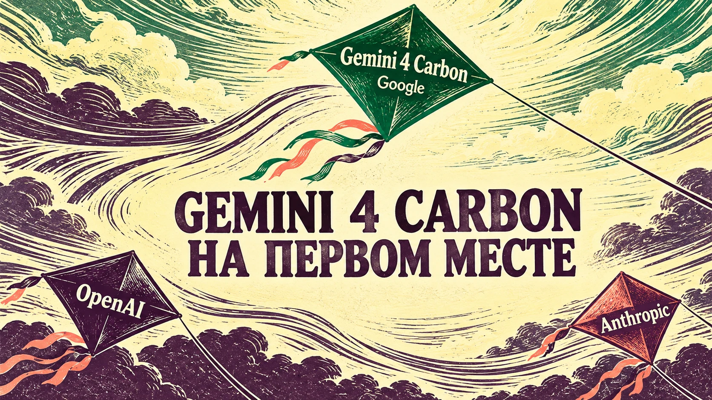

Google 10 ноября открыла Gemini 4 Carbon для платных разработчиков, корпоративных клиентов и подписчиков Google AI Ultra.
До этого модель была доступна лишь участникам специальной программы по кибербезопасности. Теперь Carbon можно подключать через платный API и продукты Google. Бесплатного доступа к ней в приложении Gemini компания не объявляла.
Одновременно компания показала в среде разработки Google Antigravity экспериментальную функцию /swarm. Одно поручение можно раздать сразу нескольким ИИ-агентам: одни пишут код, другие проверяют результат, третьи ищут ошибки. Получается небольшая команда, в которой начальник тоже нейросеть.
Зачем понадобилась ещё одна мощная Gemini
Carbon представили в конце октября. Тогда модель привлекла внимание прежде всего результатами в рейтинге ИИ, но воспользоваться ей могли далеко не все.

Для большинства задач Google по-прежнему предлагает Gemini 4 Argon.
Carbon рассчитана на более тяжёлую работу, где модель должна долго удерживать цель, выполнять несколько этапов, сверять промежуточные результаты и возвращаться к ошибкам. Например, разбираться в большом программном проекте, проверять сложные документы или помогать с научными исследованиями.
Несколько ИИ-агентов помогли разработчикам собрать трёхмерную экскурсию по строительству Эйфелевой башни на основе исторических фотографий и чертежей. А в другом эксперименте они создали игру с пеликаном, который ездит на велосипеде по виртуальному кампусу Google.
Один запрос — целый отдел исполнителей
В предварительной версии /swarm для Antigravity разработчик описывает крупную задачу, а система распределяет работу между агентами в отдельных рабочих пространствах.
Carbon можно назначить проектировать архитектуру, координировать работу и проверять сложные решения. Более быстрые модели в это время выполняют отдельные части задания. Для проверки изменений предусмотрены независимые агенты, задача которых — находить проблемы в чужом результате.
Пока /swarm тестируют как предварительную функцию Antigravity.
Вход платный, а цена скоро удвоится
Разработчики получили доступ через платный уровень Gemini API в Google AI Studio и Android Studio. Для компаний доступ предусмотрен в Gemini for business. Подписчикам Google AI Ultra Carbon постепенно подключают в приложении Gemini, поисковом AI Mode и Antigravity.
До 30 ноября 2026 года Gemini API для Carbon стоит $2 за миллион входных токенов и $10 за миллион выходных. С 1 декабря Google установит тариф $4 и $20 соответственно.
Для учёных действует отдельная программа отбора. Её участникам обещают шесть месяцев бесплатного доступа к высокому уровню Antigravity с моделями Argon и Carbon.
Получить Carbon сейчас можно через Google AI Ultra или платный API. А собрать из ИИ целый отдел исполнителей Google предлагает в экспериментальной версии /swarm для Antigravity.